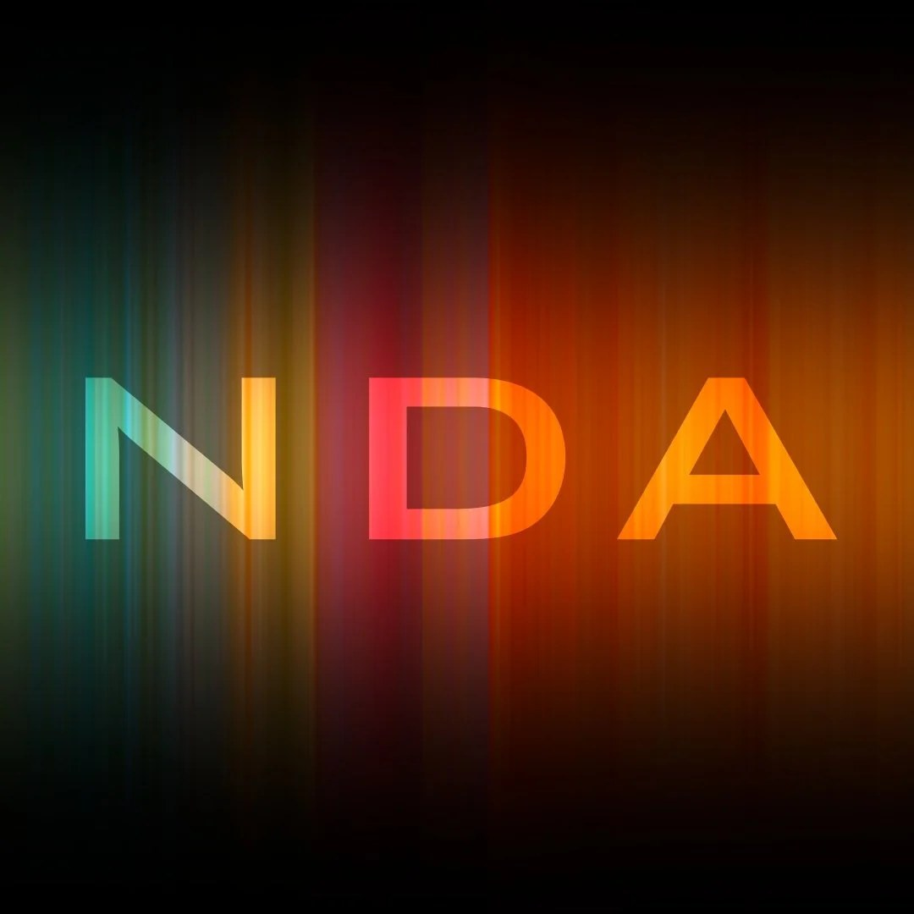
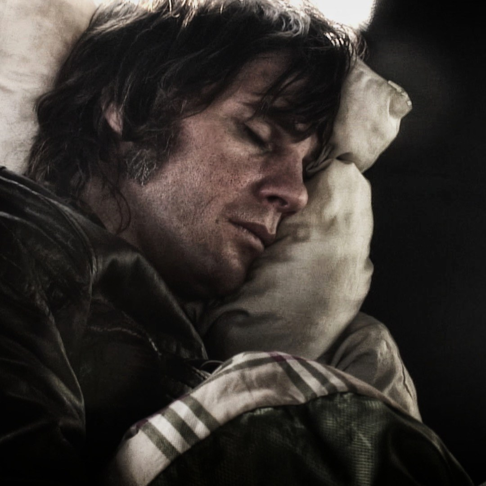
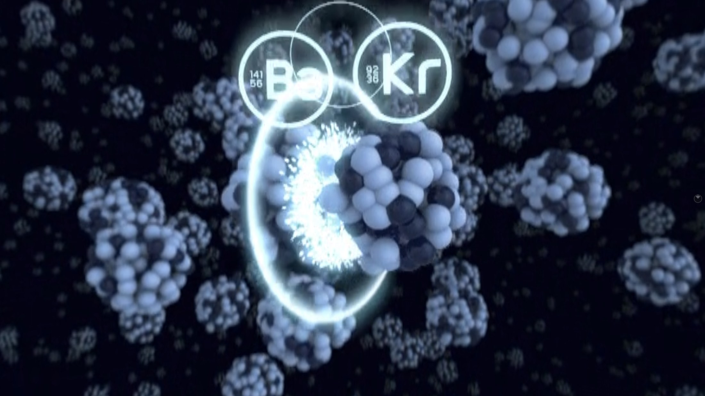
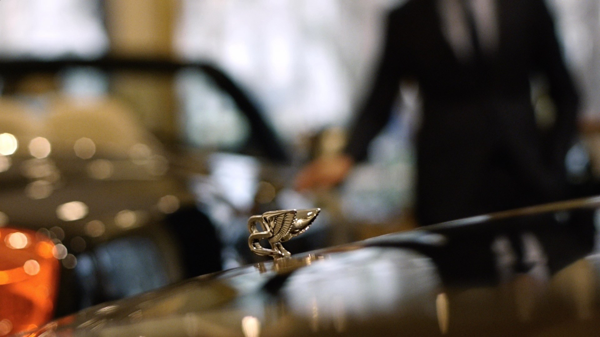
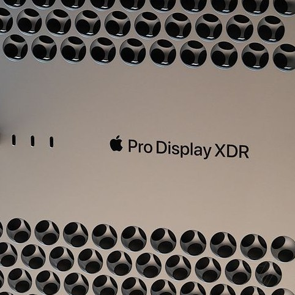
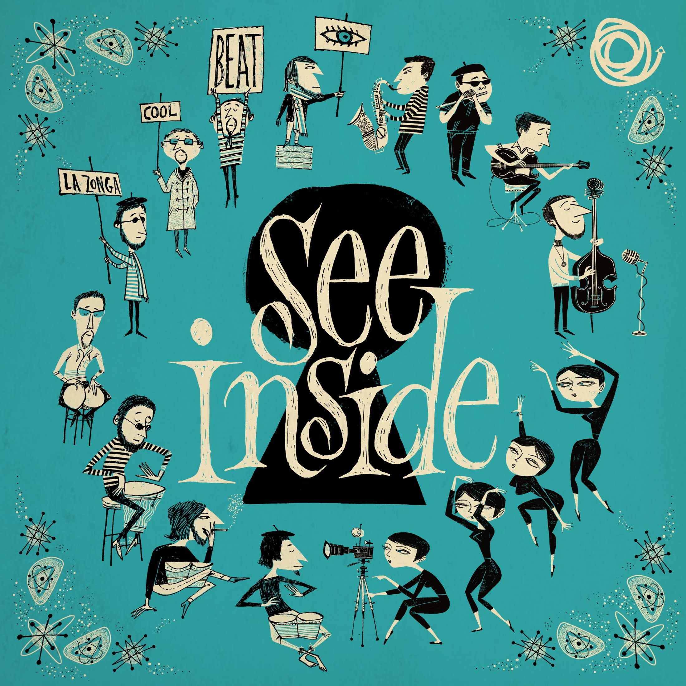
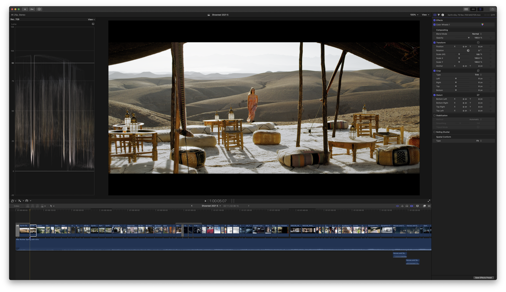
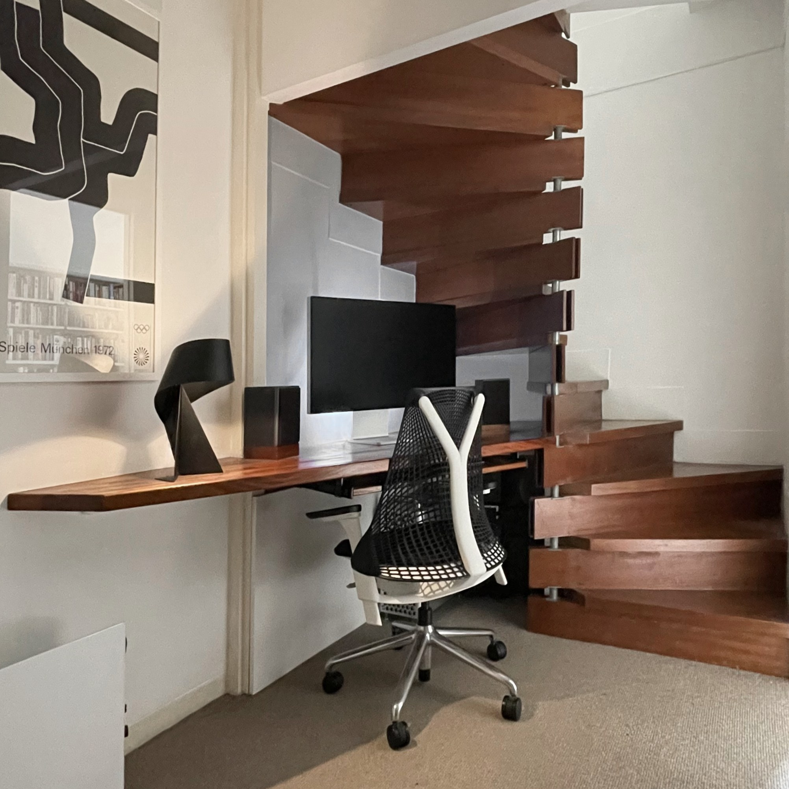

AI - A Brutalist Sculpture Show
Read MoreAI - Zombies
Read More
NDA
Read MoreMaking it rain
Three seasons in one day for Virgin O2.
Read MoreSlow is the new fast
Rethinking online video with EUDON CHOI.
Read MoreEnergy Transition
Drones, CGI & sustainability with Glenfarne Group.
Read MoreIntroducing Dr. Doritos
Adventures in experimental jazz hypnotherapy.
Read More
A blast from the past
TBT - On tour with Whitey.
Read More
Directing cinematic VR
In space no one can hear you throw up.
Read More
Space, time and luxury
Just breath and ignore the price tag.
Read More
What's the point of the Pro Display XDR?
Some thoughts on Apple's much misunderstood reference monitor.
Read More
Cocktails in VR
A journey into the third dimension with The Karminsky Experience.
Read More
The Apple way
Most editors use Premiere. They're doing it wrong.
Read More
Working from home
2020 was a great year to be alive, considering the alternatives.
Read More